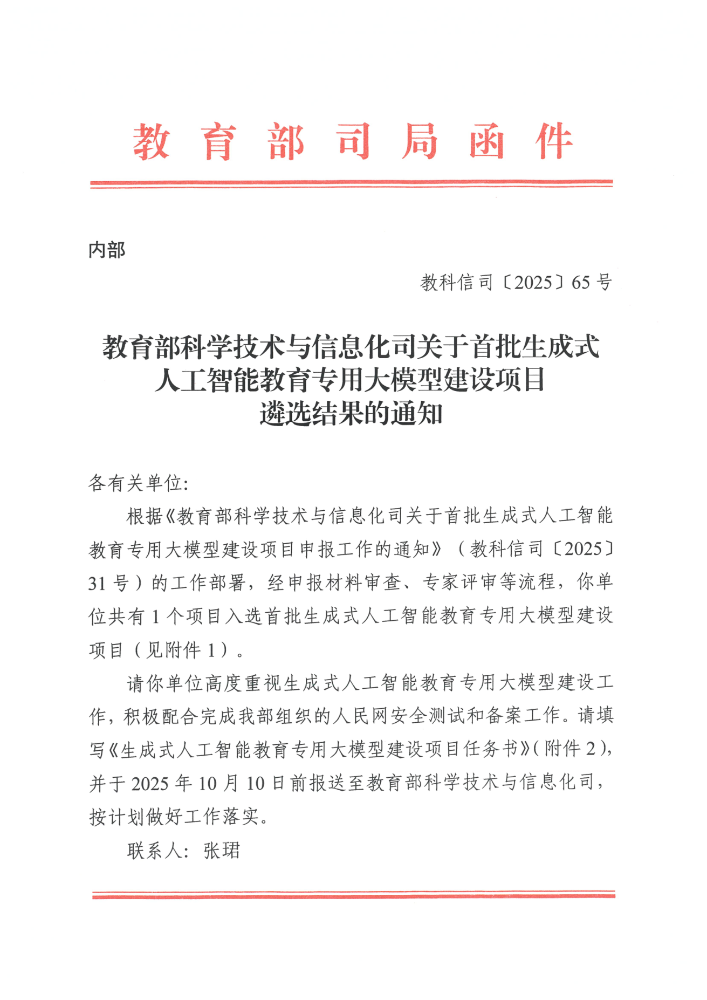
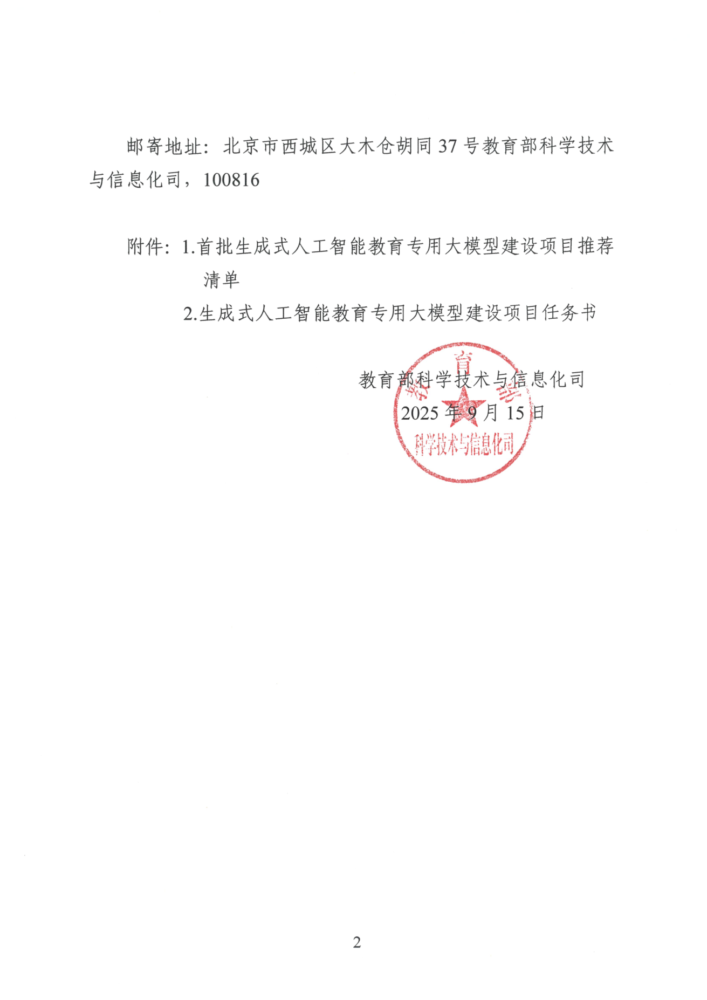
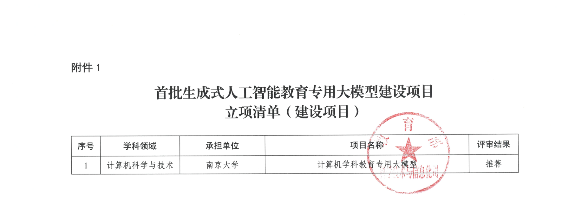

我们的起点 · 南京大学
B 端的已有起点：一切从南大这个土壤开始
我们是一支南大内部的学生团队，在南大有先天优势和现有支持。就以现状可控的未来来说：校方出资、约束少、还有现成的师生团队。B 端和 C 端，都在这里拿到各自的「初始条件」。
初始条件
同一个校园，给两条线各发一手好牌
to-B · 第一个平台
成熟方案的最佳靶场
校方出资、限制少、自由发挥——理想的第一块试验田。
- 用南大项目打磨出一套成熟 B 端方案的「母版」
- 日后扩到别的学校，本质是换 IP、换壳复制
- 在约束最少的南大做这个母版，成本最低
to-C · 天然试验田
现成的第一批测试用户
不用从零找人，校园里就有真实的学习者。
- 老师自己开的课，天然的试点场景
- 校内考研 / 雅思 / 四六级等刚需人群
- C 端产品的冷启动，一开始就有真人可跑
要说清楚的是：南大是一片格外肥沃的土壤——给养分、给门、给第一批用户。但它只是起点，不是循环本身：种子能不能长成大树、自己开枝散叶，靠的是后面两条线各自转起来的「循环」。
官方背书
这个起点是已经盖了章的
教育部 · 教科信司〔2025〕65 号
① 教育部司局函件 · 遴选结果通知
② 用印与落款 · 2025.09.15
③ 立项清单 · 南京大学 · 计算机学科教育专用大模型 · 推荐
2025 年 9 月，教育部科学技术与信息化司公布首批「生成式人工智能教育专用大模型建设项目」遴选结果。南京大学的「计算机学科教育专用大模型」项目入选，评审结果为 推荐。
换句话说，我们要做的这件事，不只是团队自己的判断——它站在一个被国家级遴选认可的项目之上。


